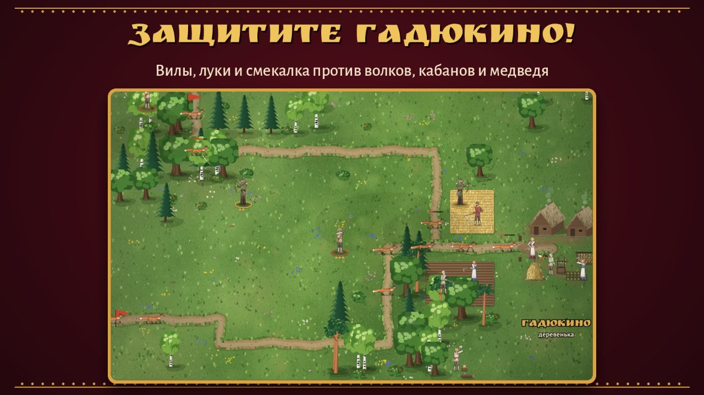
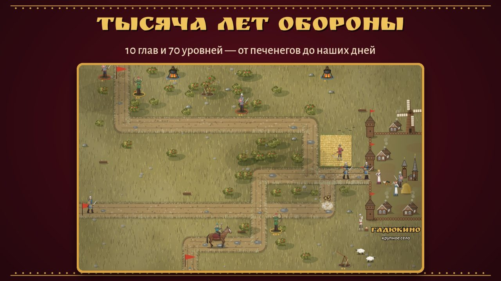
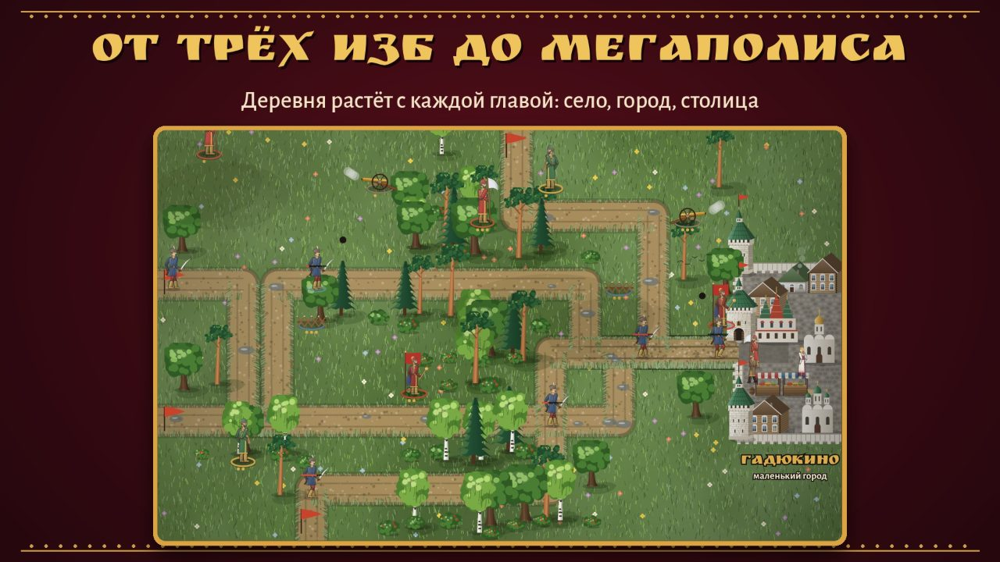
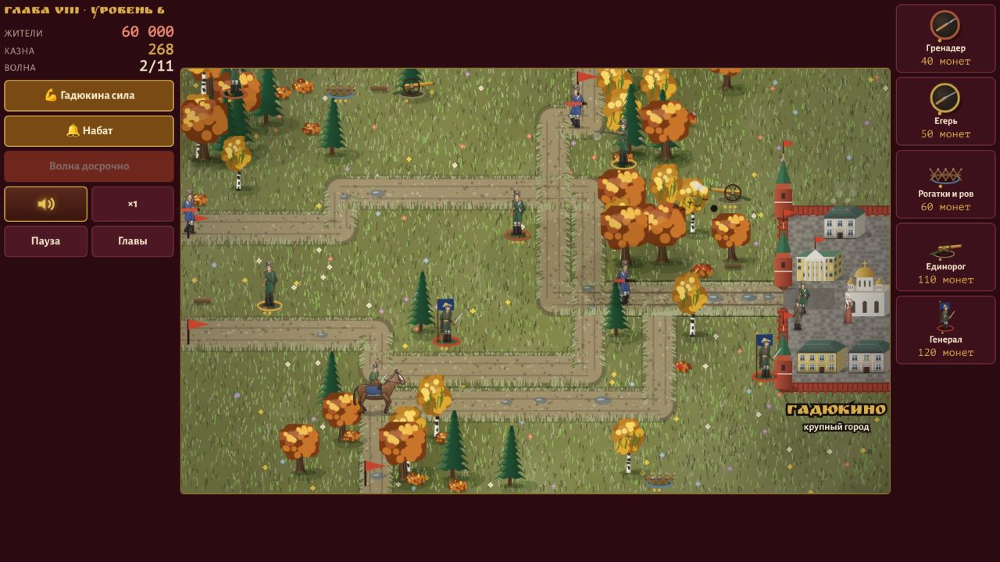
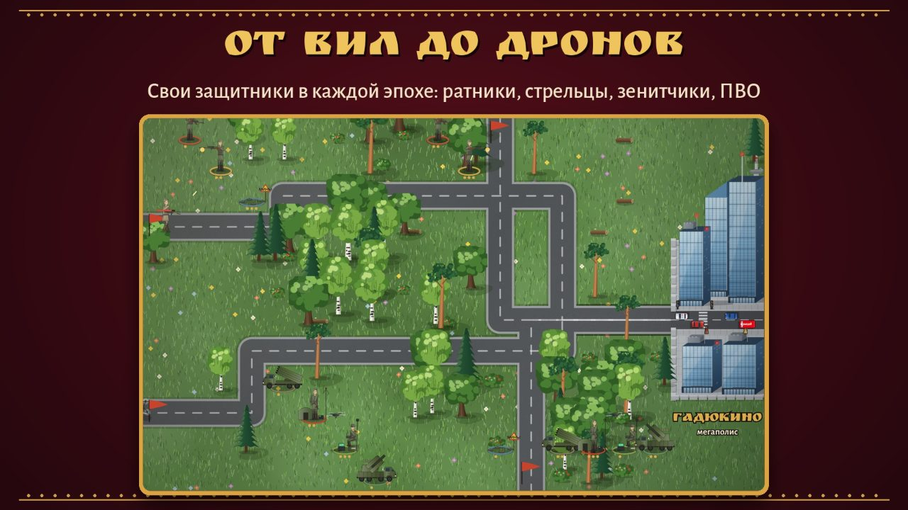
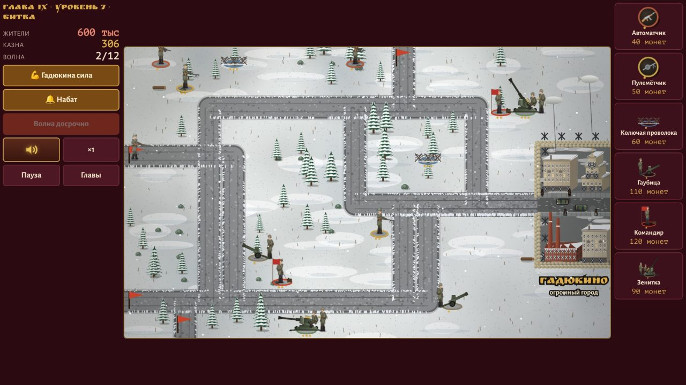

Как это выглядит






Об игре
Тысячу лет подряд кто-нибудь хочет захватить Гадюкино: то волки, то печенеги, то Наполеон. Жители уже привыкли — убрали урожай, отбили нашествие, поставили новую избу.
«Оборона Гадюкино» — классическая «оборона башен» с русским характером. Расставляйте защитников вдоль дорог, усиливайте их и не пропускайте врага к деревне. С каждой главой Гадюкино растёт: деревенька, деревня, село, город — и, наконец, мегаполис. Вместе с ним меняются и защитники: мужики с вилами, ратники, стрельцы, гренадеры, зенитчики, дронщики.
Игру сделал один разработчик, Александр Мальцев. Вся графика нарисована специально для неё.
Что внутри
- 10 глав и 70 уровней, вожак в конце каждой главы
- Свои защитники и враги в каждой эпохе
- «Гадюкина сила» и набат — способности на крайний случай
- Ночные бои, конные набеги, орды — особые испытания
- Кузница Прохора: улучшения за звёзды для всех глав
- «Летопись Гадюкина» — короткая история к каждой главе
- Три звезды за уровень без потерь
- Живые звуки и музыка, игра без интернета
Десять глав — тысяча лет
| Глава | Эпоха | Гадюкино | Враг |
|---|---|---|---|
| I | Глухая старина | Деревенька | Хищники: лисы, волки, кабаны, медведь-шатун |
| II | Лихие времена | Деревня | Разбойники и их атаман |
| III | X век | Село | Печенеги |
| IV | XIII век | Крупное село | Татаро-монголы |
| V | XIII век | Городок | Тевтонские и ливонские крестоносцы |
| VI | XVII век | Маленький город | Речь Посполитая |
| VII | XVIII век | Город | Шведы |
| VIII | 1812 год | Крупный город | Армия Наполеона |
| IX | 1941–1945 | Огромный город | Немецко-фашистские захватчики |
| X | Наши дни | Мегаполис | Враждебный Альянс |
Вопросы и ответы
Игра бесплатная?
Да. «Оборона Гадюкино» бесплатна, встроенных покупок нет. Иногда между уровнями показывается реклама, а за просмотр ролика по желанию можно получить бонус: монеты от купца или звезду кузнеца.
Нужен ли интернет?
Нет, игра работает без интернета: в дороге, на даче, в самолёте. Интернет нужен только для показа рекламы.
Где скачать «Оборону Гадюкино»?
В магазине приложений RuStore: rustore.ru/catalog/app/ru.gadyukino.oborona.
На каких устройствах работает игра?
На телефонах и планшетах с Android 7.0 и новее. Интерфейс подстраивается под экран, играть удобно горизонтально.
Сколько в игре уровней?
70: десять глав по семь уровней. На седьмом уровне каждой главы ждёт вожак: медведь-шатун, атаман, хан печенегов, магистр ордена и другие.
Какие эпохи и враги есть в игре?
Хищники в глухой старине, разбойники в лихие времена, печенеги в X веке, татаро-монголы и тевтонские крестоносцы в XIII веке, Речь Посполитая в XVII веке, шведы в XVIII веке, армия Наполеона в 1812 году, немецко-фашистские захватчики в 1941–1945 годах и современный Враждебный Альянс.
Есть ли игра на iPhone или в Google Play?
Пока игра выходит только для Android в RuStore.
Подходит ли игра детям?
Возрастная маркировка 12+: в игре есть сражения, но без натурализма. Графика рисованная, бои стилизованные.